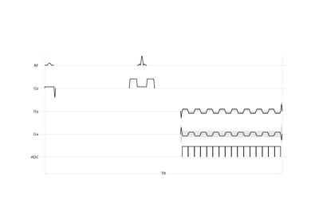

plot_kspace#
- pypulseqpp.plot.plot_kspace(seq, *, time_range=None, block_range=None, tr_range=None, plane=None, show_trajectory=True, color_by=None, plot_now=True)[source]#
Plot the ADC sampling locations in k-space.
- Parameters:
seq (Sequence) – The sequence to draw.
time_range (sequence, optional) – The part of the sequence to draw, as for
Sequence.plot(); at most one. The whole sequence by default.block_range (sequence, optional) – The part of the sequence to draw, as for
Sequence.plot(); at most one. The whole sequence by default.tr_range (sequence, optional) – The part of the sequence to draw, as for
Sequence.plot(); at most one. The whole sequence by default.plane ({"xy", "xz", "yz", ...}, optional) – Two of
x,y,zandfto project onto, wherefis the transmit frequency of each sample’s slice. By default a trajectory confined to a plane is drawn in it, and any other in 3D.show_trajectory (bool, default True) – Also draw the trajectory between samples. The axis limits are set from the sampling locations either way, so a prewinder or spoiler is clipped rather than setting the scale.
color_by ({"echo", "shot", "order"}, optional) – Colour samples by echo index within the shot, by shot index, or both side by side. A panel whose index never varies is dropped.
plot_now (bool, default True) – Show the figure before returning.
- Return type:
Notes
Coordinates are physical-axis k-space in 1/m, block rotations applied.
Examples using plot_kspace#

2D PROPELLER spin echo with echo-planar blades